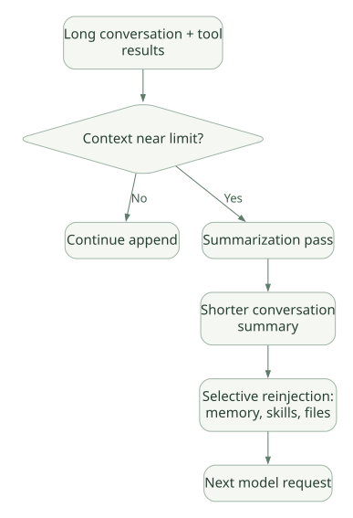

SECOND STUDY / 모델 입력·Cache·압축
모델 입력·Cache·압축
이번 단원의 읽는 관점
System·Project·Conversation 층과 재전송·재계산·요약을 나눕니다.
살펴볼 경계Provider·모델·설정별 Cache Break 예외와 압축 후 재주입 조건을 보세요.
이 페이지의 세부 목차
Part II. 실제 모델 입력, Prefix Caching, Context Compression
6. 최종 LLM 요청은 무엇으로 구성되는가?#
Claude Code 공식 문서는 요청을 다음 세 계층으로 설명한다. DOC
| 계층 | 들어가는 대표 내용 | 변경 타이밍 | 캐시 측면 |
|---|---|---|---|
| System prompt | 코어 작업 지침, 노출된 Tool 정의 | Tool 정의 집합·런타임 설정 변화 | 가장 앞쪽이므로 변경 시 이후 Prefix 전체 영향 |
| Project context | CLAUDE.md, Auto Memory, 범위가 없는 규칙 |
Session 시작·/clear·/compact 등 |
상대적으로 안정적인 두 번째 Prefix |
| Conversation | 사용자/모델 메시지, Tool 결과, 현재 요청, 일부 동적 삽입 메시지 | 매 Turn/Tool 호출 | 뒤쪽에 추가되어 이전 Prefix 재사용 가능 |
실제 API는 모델·Provider·Tool Search·이미지·시스템 블록 형식에 따라 구체적인 구조가 달라진다. 위 표는 공식 문서가 공개한 논리적 레이어이며, “항상 이 문자열 세 개만 붙이면 실제 Claude Code 요청과 바이트 단위로 동일하다”는 뜻은 아니다.
6.1 왜 불변 내용부터 배치하는가?#
Prompt Cache는 일반적인 파일별 캐시가 아니다. 앞에서부터 정확히 일치하는 Prefix를 재사용한다. 따라서 앞부분 한 곳이 바뀌면 뒤쪽의 내용이 동일해도 그 뒤에 위치한 Prefix의 캐시 적중을 잃을 수 있다. Claude Code는 변동이 작은 Tool·기본 지침을 앞에, 프로젝트 지침을 중간, 새 대화를 뒤에 배치해 적중 확률을 높인다. DOC
Turn 1: [SYSTEM A][PROJECT X][USER 1][ASSISTANT 1]
Turn 2: [SYSTEM A][PROJECT X][USER 1][ASSISTANT 1][USER 2] # 앞부분 재사용
Turn 3: [SYSTEM B][PROJECT X][USER 1][ASSISTANT 1][USER 2] # SYSTEM 변경 → 재계산요청 때마다 앞 내용이 다시 전송되는 것과 모델 제공자가 해당 Prefix를 새로 계산해야 하는 것은 별개다. 캐시 적중 시 이미 처리한 Prefix를 재사용하며, 이때도 캐시 읽기 토큰 비용이 발생할 수 있다.
7. Cache Break를 정확히 이해하기#
7.1 무엇이 캐시를 흔드는가?#
공식 문서가 공개한 주요 요인을 다음처럼 분류한다. DOC
| 변화 | 캐시 효과 | 설계 해석 |
|---|---|---|
| 모델 교체 | 새로운 모델의 캐시를 사용해야 함 | 장기 세션의 중간 모델 전환이 비쌀 수 있음 |
| Effort level 변경 | 대부분 모델에서는 변경; 특정 최신 모델·제공자 조합은 예외 | ‘모델 설정 변경 = 항상 Break’라고 단정 금지 |
| Fast/Standard 전환 | 서로 다른 캐시 | 가속 전환 비용 고려 |
| MCP Tool 정의 변화 | Tool Search 사용 여부에 따라 다름 | Tool 정의가 Prefix에 고정되면 변경 비용 큼 |
| Plugin의 MCP Server 변경 | 서버 연결·정의 변화 시 영향 가능 | Plugin 명칭이 아니라 실제 Tool 정의 변화가 중요 |
| Plugin 내 Skills·Hooks 변경 | 보통 대화 뒤에 추가되는 방식으로 기존 Prefix 보존 가능 | Plugin 업데이트와 MCP 서버 갱신을 동일시 금지 |
| Scoped Tool deny/allow 변경 | Tool Search와 정의 노출 여부에 따라 차이 | 권한 검사 자체와 모델이 보는 Tool 목록은 다름 |
/compact |
Conversation Layer 캐시 무효화 | System·Project Layer 일부 재사용 가능 |
| 단순 소스 파일 수정 | 기존 캐시 전체 무효화가 아님 | 변경 알림이 대화 뒷부분에 들어갈 수 있음 |
CLAUDE.md 중간 수정 |
통상 현재 세션의 Project Context에 즉시 재주입되지 않음 | 파일 변경과 Prompt 재구축 시점을 구별 |
/rewind |
이전 Prefix를 재사용할 수도 있음 | 메시지 상태를 되돌린다는 것과 캐시 삭제는 다름 |
특히 Tool Search가 중요한 이유: 모든 MCP Tool 스키마를 시작부터 싣지 않고 필요할 때 로드하면 시스템 Prefix의 정의 집합이 덜 흔들릴 수 있다. 이 장점은 Token 절약과 캐시 재활용이지만, 도구 발견 지연·선택 정확도라는 대가가 생긴다. DOC[R15]
7.2 공식 Cache 통계 해석#
cache_creation_input_tokens: 새로 캐시에 작성된 입력 토큰.cache_read_input_tokens: 이전 Prefix에서 읽은 입력 토큰./usage의 Prompt Cache 항목: 메인 세션의 적중·미스 관련 통계를 보는 통로. DOC
개념적으로 비용은 다음과 같이 나눈다.
총 입력 관련 비용 ≈
uncached_input_tokens × 일반 입력 단가
+ cache_creation_input_tokens × 캐시 쓰기 단가
+ cache_read_input_tokens × 캐시 읽기 단가이 식은 결제 명세를 그대로 재현하는 수식이 아니라 비용 원리를 이해하기 위한 구조다. 실제 가격·TTL·Provider 과금은 달라질 수 있다.
7.3 캐시 저장 위치도 설계 요소다#
공식 문서에 따르면 Anthropic API, AWS/Bedrock, Google, Microsoft 및 커스텀 Gateway 등 실제 모델을 서빙하는 계층에 따라 캐시가 존재하는 곳이 달라진다. 게이트웨이가 cache_control 블록을 변환하거나 제거하면 정상적으로 입력을 전달해도 캐시가 작동하지 않을 수 있다. 프록시 통과 여부가 곧 Prompt Caching의 보장이라는 의미는 아니다. DOC
자체 Harness를 만든다면: Tool 스키마·시스템 지침의 안정적 정렬, 모델별 캐시 키, Provider capability negotiation, Gateway의 캐시 마커 보존 검증, cache hit/miss metrics를 명시적인 인터페이스로 만들 필요가 있다.
8. TTL, Session, Subagent Cache는 다른 개념#
Cache TTL은 서버에서 Prefix를 얼마나 오래 재사용할 수 있는가이고 Session 저장은 과거 대화를 얼마나 오랫동안 다시 불러올 수 있는가이다. 전자가 만료되어도 대화 기록이 없어지는 것은 아니다.
- API의 대표적인 TTL 유형은 5분과 1시간이며, 비용 구조가 다르다. 실제 설정·Provider·계정별 지원 여부 확인. DOC
- 세션을 재개하면 저장된 대화가 다시 전송되고 아직 유효한 Prefix만 적중한다.
- 일반 Subagent는 부모와 별개의 시스템 지침·Tool·대화를 갖기 때문에 부모의 Prefix를 그대로 공유하지 않는다. 반면 대화 Fork처럼 동일 Prefix를 계승하는 경우는 다르게 판단해야 한다. DOC
발표에서 가장 중요한 문장: 장기 메모리, 세션 보존, 컨텍스트 압축, Prefix Cache는 각각 지식 저장 / 대화 지속 / 모델 입력 크기 조절 / 입력 재계산 절약이라는 서로 다른 문제를 해결한다.
9. Compaction은 실제로 무엇을 대체하는가?#
Claude Code는 컨텍스트가 한계에 가까워지면 기존 대화 내용을 더 짧은 요약으로 교체한다. 이는 단순히 메시지 몇 개를 잘라내는 것만은 아니며, 대화 내용이 서술적 요약으로 변환되므로 원본 Tool 결과의 세부 정보·가설·예외 조건이 유실될 위험이 있다. DOC
가로로 이동해서 읽을 수 있습니다. 도식 크게 보기 ↗

원문의 학습용 도식입니다. 연결 방향·분기 조건·점선·쌍방향 연결을 보존해 세로로 배치했습니다. 실제 구현·의사코드·해석의 구분은 본문을 함께 읽으세요.
도식 원문 보기 (Mermaid)
flowchart LR
A[Long conversation + tool results] --> B{Context near limit?}
B -->|No| C[Continue append]
B -->|Yes| D[Summarization pass]
D --> E[Shorter conversation summary]
E --> F[Selective reinjection: memory, skills, files]
F --> G[Next model request]9.1 Compaction 후 무엇이 다시 들어오는가?#
2026-10-31 기준 공식 Context Window 문서에서는 다음 동작이 설명된다. DOC
- 압축 후 최근 수정한 파일 등을 제한적으로 다시 참조·로드할 수 있다.
5,000토큰 초과 파일은 전체 내용이 아니라 경로 참조로 돌아오는 경우가 있다. - 경로별 규칙과 중첩
CLAUDE.md는 대화에 들어온 뒤 압축 과정에서 요약되어 사라질 수 있다. 지속 강제가 필요한 규칙은 범위 없는 규칙이나 루트CLAUDE.md에 두는 방식을 고려한다. - 사용한 Skill 본문은 압축 후 재주입될 수 있지만, 큰 Skill은 잘릴 수 있고 오래된 Skill은 전체 Budget에 따라 제외될 수 있다.
- System 및 Project Prefix는 가능한 범위에서 재사용되지만 Conversation 요약 교체로 그 층은 캐시 무효화된다.
9.2 결정적으로 잃으면 안 되는 정보는 어디에 두어야 하나?#
| 정보 | 권장 저장 위치 | 이유 |
|---|---|---|
| 프로젝트 기본 원칙 | 루트 CLAUDE.md, 관리자 정책 |
대화 요약에 의존하면 안 됨 |
| 반드시 지켜야 하는 보안 정책 | 호스트 권한·관리자 설정·서버 검증 | LLM이 읽었는지와 무관하게 강제해야 함 |
| 반복적으로 필요한 절차 | 검토된 Skill 또는 Tool | 대화에 절차를 여러 번 복제하지 않음 |
| 특정 Task의 계산 결과 | 구조화 파일·DB·아티팩트 | 재현·검증 가능성이 높음 |
| 진행 중 작업의 임시 계획 | Session/Task state | 재개·중단과 연계 |
| 개인화된 작은 프로젝트 메모 | Auto Memory | 다음 세션에서 재사용 |
설계 Trade-off: 요약을 적극적으로 수행할수록 장기 작업의 토큰 비용은 낮아지지만, 근거의 정확한 보존과 실행 재현성은 어려워진다. 실무 프레임워크에는 요약 외에도 정형 State, 원문 참조 ID, Tool Output Artifact 저장이 필요하다.